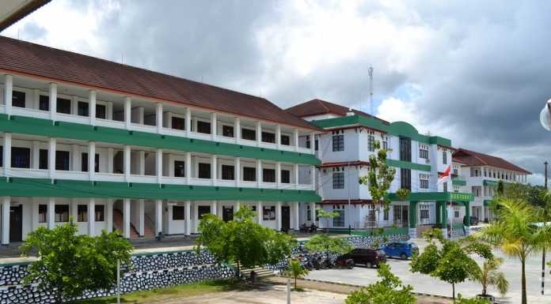

Tugas Ke-4
Nama Lengkap : Wasti Britania Torsulu
NIM : 202055202084

Deskripsi :
Universitas Muhammadiyah Sorong merupakan satu-satunya Universitas swasta milik Persyarikatan Muhammadiyah yang berada di Kota Sorong Provinsi Papua Barat. Awal pendirian berupa sekolah Tinggi Ilmu Admistrasi Negara (STIA) Al- Amin Sorong pada tanggal 30 Oktober 1984 berdasarkan SK Menteri Pendidikan dan Kebudayaan No. 0519/0/1984.
Seiring dengan minat masyarakat Kota Sorong yang cukup besar untuk melanjutkan studi S1 pada beberapa bidang ilmu, maka pada tahun 2002 terjadi perubahan bentuk Sekolah Tinggi Ilmu Administrasi menjadi Universitas Al-Amin Sorong dengan membuka 5 fakultas dan 10 program studi baru berdasarkan Keputusan Dirjen Dikti Depdikbud Nomor 264/D/O/2002 tanggal 20 Desember 2002. Pada tahun 2006 menambah satu fakultas dan dua program studi berdasarkan SK. Dikti No. 813/D/T/2006 tanggal 28 Februari 2006.
Pada tahun yang sama berdasarkan surat dari Pimpinan Pusat Muhammadiyah No. 160/KEP/I.0/2006 tentang berdirinya Universitas Al-Amin muhammadiyah Sorong. Melihat perkembangan, potensi dan peran Universitas di wilayah timur untuk turut serta dalam menyediakan SDM berkualitas, baik bidang kependidikan maupun non kependidikan maka pada tahun 2013 dengan berbagai alasan maka terbentuklah Universitas Muhammadiyah Sorong (UM Sorong) dari nama awal Universtas Al-Amin Muhammadiyah Sorong berdasarkan Keputusan Dirjen Dikti Depdikbud Nomor 568/E/O/2013 tanggal 09 Desember 2013.